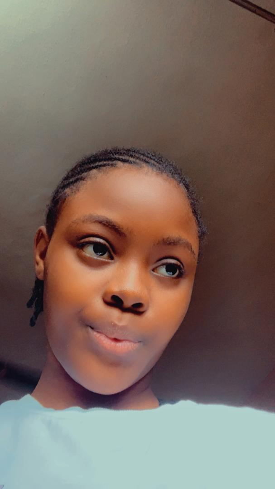

Annalucia Awa | WDD130
Hello! My name is Annalucia Awa. I am from Nigeria. I am a deeply curious and creative person who loves learning and exploring, expressing myself in uniue ways. I don't like to stay on the surface, I enjoy diving deep into whatever sparks my interest, whether it's languages, technology or personal growth. One of my favorite hobbies is learning. I always try to expand my knowledge for example diving into software and web development. I enjoy crreating beautiful things and often get excited about how to bring my ideas to life. I dream of building something meaningful. I dislike being misunderstood or feeling unproductive. I don't enjoy it when I can't express my ideas fully or when I'm not progressing. Still I try to be hopeful and keep moving forward I am a mix of emotion, logic, creativity and resilience. I feel things deeply and I care about crreating beauty not just in art or code, but in life itself.